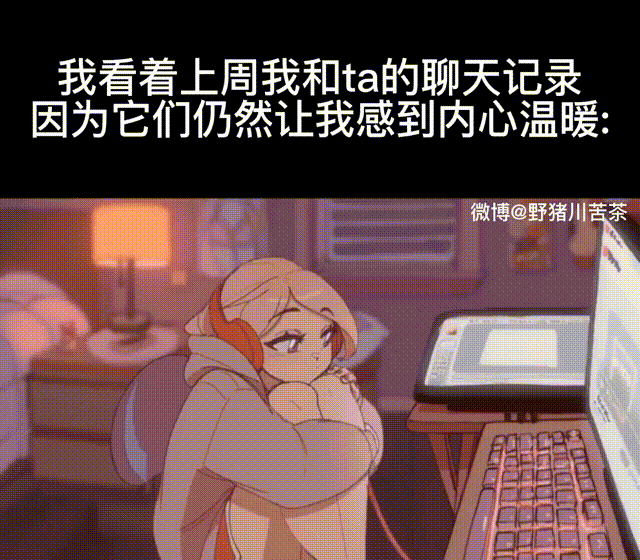

——果然我心理有大问题。
之前不是说有个朋友么，
ツギハギスタッカート这段时间朋友对我很冷漠，也不会主动发消息给我。
我确实很奇怪，是否为我哪里得罪于朋友？亦或是我让朋友感到厌烦，或者朋友找到了“新欢”？
我倒是挺想问一下朋友，但是又不怎么好意思开口，上次写给朋友的信，朋友也没回复，我这时候思考着，是不是信让朋友不高兴了？
总是胡思乱想，难受。
我觉得可以迟一点，或者年后写信问问朋友。
唯一一点还好的就是，朋友暂时没有把我屏蔽，或者只是对我感到厌烦？
看着以前的聊天记录，我怎么也想不明白。
也可能是我多次讨论去朋友家惹恼朋友了，觉得我不听人话。
唉，好急，但又无从下手。
暂定年后写一份信发给朋友吧。
只能先这样吧。
时不时翻翻以前的聊天记录，真好啊。
其实突然想到
Now autumn’s tears begin to freeze
现在秋日的眼泪开始冻结And I’m willing to leave again
我愿意再次离开
很久以前朋友与我听了这首歌，朋友说很喜欢这首歌英文歌，是为数不多喜欢歌词的英文歌。
而现在到了一年最冷最冷的时候。
其实理智来说，我更加倾向于我想多了。
但是感性快压过理智了，我该怎么办？
去喝了口茶，理智回复了一点，怎么看怎么不对劲自己。
难顶。